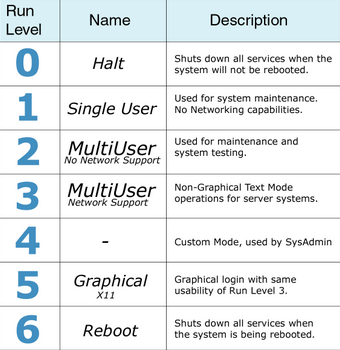
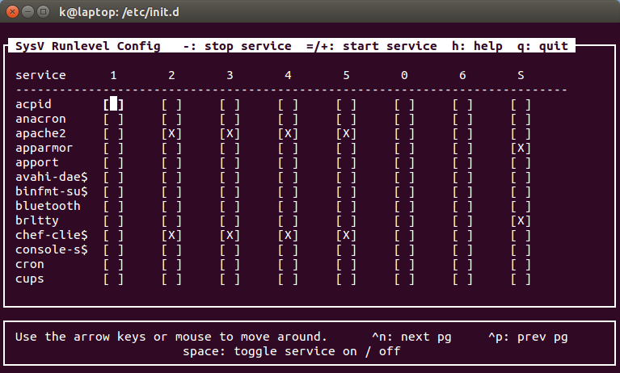
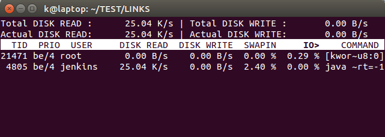

DevOps / Sys Admin Q & A #3 : Linux Systems
- Process scheduling - linux is a preemptive multitasking operating system. Preemptive means that the rules governing which processes receive use of the CPU and for how long are determined by the kernel process scheduler.
- Creation and termination of processes.
- Memory management - linux employs virtual memory management which has two main advantages. Processes are isolated from one another and from the kernel, so that one process can't read or modify the memory of another process or the kernel.
- The kernel provides a file system.
- Access to devices such as mice, monitors, keyboards, disk and tape drives, and so on).
- Provision of a system call application programming interface (API).
- Networking
Runlevel is a mode of operation in OS, and a runlevel represents the different system state of a Linux system.
When the Linux system boots, the kernel is initialized, and then enters one (and only one) runlevel. When a service starts, it will try to start all the services that are associated with that runlevel.
In general, when a computer enters runlevel 0, the system shuts down all running processes, unmounts all file systems, and powers off.
When it enters runlevel 6, it reboots.
The intermediate runlevels (1-5) differ in terms of which drives are mounted, and which network services are started. Default runlevels are typically 3, 4, or 5.
Runlevel 1 is reserved for single-user mode-a state where only a single user can log in to the system.
'Single user' mode runlevel 1 (or 'S') is sometimes called a 'rescue', or a 'trouble-shooting' mode.
Generally, few processes are started in single-user mode, so it is a very useful runlevel for diagnostics when a system won't fully boot. Even in the default GRUB menu we will notice a recovery mode option that boots us into runlevel 1.
In other words, runlevels define what tasks can be accomplished in the current state (or runlevel) of a Linux system. Every Linux system supports three basic runlevels, plus one or more runlevels for normal operation.
Lower run levels are useful for maintenance or emergency repairs, since they usually don't offer any network services at all.

We can check current runlevel simply by issuing runlevel command :
$ runlevel N 2
It shows both the previous runlevel and the current one. If the first output character is 'N', the runlevel has not been changed since the system was booted. We can set the runlevel without reboot using telinit:
$ sudo telinit 5 $ runlevel 2 5
Under the folder /etc/init.d/, we find all the init scripts for different boot up services, like apache2, networking, etc.
Depending on which runlevel the computer starts in, different services are started. For example, let's look int /etc/init.d/nginx, we can see the when the nginx server runs (runlevel 2 3 4 5):
### BEGIN INIT INFO # Provides: nginx # Required-Start: $local_fs $remote_fs $network $syslog $named # Required-Stop: $local_fs $remote_fs $network $syslog $named # Default-Start: 2 3 4 5 # Default-Stop: 0 1 6 # Short-Description: starts the nginx web server # Description: starts nginx using start-stop-daemon ### END INIT INFO
The run levels are defined by files in the file system. All the run level files are found in the /etc directory according to the following table:
/etc/rc0.d Run level 0 /etc/rc1.d Run level 1 /etc/rc2.d Run level 2 /etc/rc3.d Run level 3 /etc/rc4.d Run level 4 /etc/rc5.d Run level 5 /etc/rc6.d Run level 6
Let's look into some of the directories rc2.d and rc6.d in Ubuntu 14:
rc2.d:
$ ls /etc/rc2.d K08vmware-USBArbitrator S20nagios-nrpe-server S50saned K09apache2 S20puppetmaster S50vmware-USBArbitrator K80nginx S20puppetqd S55vmware-workstation-server README S20rabbitmq-server S70dns-clean S19postgresql S20redis_6379 S70pppd-dns S19vmware S20redis-server S92tomcat7 S20apache-htcacheclean S20rsync S95elasticsearch S20fcgiwrap S20speech-dispatcher S95kibana S20jenkins S20sysstat S99chef-client S20jetty8 S20virtualbox S99grub-common S20kerneloops S23ntp S99monit S20memcached S25vmamqpd S99ondemand S20nagios S50cassandra S99rc.local
rc6.d:
K01monit K20jenkins K20rsync K02chef-client K20jetty8 K20speech-dispatcher K06vmamqpd K20kerneloops K20virtualbox K06vmware-workstation-server K20memcached K21postgresql K08tomcat7 K20nagios K50cassandra K08vmware K20nagios-nrpe-server README K09apache2 K20nginx S20sendsigs K10elasticsearch K20puppetmaster S30urandom K10kibana K20puppetqd S31umountnfs.sh K10unattended-upgrades K20rabbitmq-server S40umountfs K20apache-htcacheclean K20redis_6379 S60umountroot K20fcgiwrap K20redis-server S90reboot
Here the first character 'S' means (S)tart files, 'K' meands (K)ill files. In other words, they indicate Enabling (S) or disabling(k) run level services.
Each of the script will be executed in alphabetical order.
Note that at runlevel 6, most of the scripts start with 'K' while runlevel 2 executes couple of Kill scripts and lots of Starts.
Let's look at some of the programs that are actually executed during a run level change:
S20rsync -> ../init.d/rsync
Note that all of the scripts that run during system start-up actually reside in the /etc/init.d/ directory.
Current level can be listed by typing the command 'who -r':
$ who -r
run-level 5 2016-03-24 13:55
init is the first process that starts in a Linux system after the machine boots and the kernel loads into memory.
It decides how a user process or a system service should load, in what order, and whether it should start automatically.
Every process in Linux has a process ID (PID) and init has a PID of 1. It's the parent of all other processes that subsequently spawn as the system comes online.
inittab file describes how the INIT process should set up the system in a certain run-level.
As an example, the default run state is 3 as shown below:
id:3:initdefault:
The /etc/rc.d/rc script will then use the specified run level to determine which set of run scripts to execute. Under normal conditions, then, rc will run with "3" as its argument and will run all the scripts in the /etc/rc3.d directory. It will run the kill scripts (those that start with an uppercase "K") first and then the start scripts (those that start with an uppercase "S") using lines like this:
for i in /etc/rc$runlevel.d/K* ; do
Our running Linux system has a number of background processes executing at any time. These processes (services or daemons) may be native to the operating system (sshd), or run as part of an application (httpd/apache2).
We want our Linux services to run continuously without failing and start automatically if the system reboots or crashes.
A reboot can happen for many reasons: it can be a planned restart, the last step of a patch update, or the result of unexpected system behavior. A crash is what happens when the process stopping unexpectedly or becomes unresponsive to user or application requests.
Most of out standard applications that we can install, such as Nginx or MySQL, will start after reboot by default, but NOT start after a crash by default. They will come with their own init scripts in /etc/init.d already.
To make sure our service is set to automatically start, we need to make sure the service has a functional Bash init script located at /etc/init.d/service.
To enable the service, we may want to use the update-rc.d command (or for a CentOS system, chkconfig):
$ sudo update-rc.d service enable
On ubuntu, the chkconfig is no longer available for 12.10+ while for Redhat it is still available.
So, /usr/sbin/sysv-rc-conf is an alternate option for Ubuntu.
We use the 'chkconfig (or sysv-rc-conf)' command to find out runlevel of applications which are running:
$ sudo sysv-rc-conf --list acpid anacron apache2 0:off 1:off 2:off 3:off 4:off 5:off 6:off apparmor S:on apport avahi-daemon binfmt-suppo bluetooth brltty S:on chef-client 0:off 1:off 2:on 3:on 4:on 5:on 6:off
We can see, the runlevel of apache2 is 2-5. To check only the runlevel of apache2, we can use:
$ sysv-rc-conf --list apache2 apache2 0:off 1:off 2:off 3:off 4:off 5:off 6:off
To configure apache2 to start on boot:
$ sudo sysv-rc-conf apache2 on $ sysv-rc-conf --list apache2 apache2 0:off 1:off 2:on 3:on 4:on 5:on 6:off
The equivalent chkconfig command:
$ sudo chkconfig apache2 enable $ chkconfig --list apache2
If the command is not available, we can install it:
$ sudo apt-get install sysv-rc-conf
To find the services with runlevel with 1:on:
$ sysv-rc-conf --list |grep "1:on" dns-clean 1:on 2:on 3:on 4:on 5:on killprocs 1:on pppd-dns 1:on 2:on 3:on 4:on 5:on single 1:on
We can set runlevel via UI by just issuing a command, sysv-rc-conf:
We want to switch current timezone (UTC) to Pacific Time. We can do it like this:
$ date Fri Sep 18 03:03:28 UTC 2015 $ sudo rm /etc/localtime $ sudo ln -s /usr/share/zoneinfo/US/Pacific /etc/localtime $ date Thu Sep 17 20:04:35 PDT 2015
ln -sf will overwrite the existing one:
$ sudo ln -sf /usr/share/zoneinfo/US/Pacific /etc/localtime
Another way of setting timezones:
$ sudo timedatectl set-timezone UTC
Or the 3rd way (interactive mode):
$ sudo dpkg-reconfigure tzdata
To list all the timezones:
$ timedatectl list-timezones
Firewall decides fate of packets incoming and outgoing in system. IPTables is a rule based firewall and it is pre-installed on most of Linux operating system. By default, it runs without any rules. So, it allows all traffic by default. IPTables is a front-end tool to talk to the kernel and decides the packets to filter.
To list tables, we can use iptables -L:
$ sudo iptables -L -n -v
Chain INPUT (policy ACCEPT 2532K packets, 360M bytes)
pkts bytes target prot opt in out source destination
0 0 ACCEPT tcp -- lxcbr0 * 0.0.0.0/0 0.0.0.0/0 tcp dpt:53
0 0 ACCEPT udp -- lxcbr0 * 0.0.0.0/0 0.0.0.0/0 udp dpt:53
0 0 ACCEPT tcp -- lxcbr0 * 0.0.0.0/0 0.0.0.0/0 tcp dpt:67
0 0 ACCEPT udp -- lxcbr0 * 0.0.0.0/0 0.0.0.0/0 udp dpt:67
Chain FORWARD (policy ACCEPT 0 packets, 0 bytes)
pkts bytes target prot opt in out source destination
0 0 DOCKER all -- * docker0 0.0.0.0/0 0.0.0.0/0
0 0 ACCEPT all -- * docker0 0.0.0.0/0 0.0.0.0/0 ctstate RELATED,ESTABLISHED
0 0 ACCEPT all -- docker0 !docker0 0.0.0.0/0 0.0.0.0/0
...
Chain OUTPUT (policy ACCEPT 2429K packets, 227M bytes)
pkts bytes target prot opt in out source destination
Chain DOCKER (1 references)
pkts bytes target prot opt in out source destination
Note that we used the following options "-L" (List ruleset), "-v" (Verbose) and "-n" (Displays in numeric format).
We have three chains:
- INPUT : Default chain originating to system.
- OUTPUT : Default chain generating from system.
- FORWARD : Default chain packets are send through another interface.
Another example: for a NodeJS application, we may want to redirect port 80 to 3000:
$ sudo iptables -t nat -A PREROUTING -i eth0 -p tcp --dport 80 -j REDIRECT --to-port 3000
Note we used -t before the nat table.
We may want to see the fire wall:
$ sudo iptables -nvL Chain INPUT (policy ACCEPT 391 packets, 30731 bytes) pkts bytes target prot opt in out source destination Chain FORWARD (policy ACCEPT 0 packets, 0 bytes) pkts bytes target prot opt in out source destination Chain OUTPUT (policy ACCEPT 291 packets, 51291 bytes) pkts bytes target prot opt in out source destination
We don't see any firewall settings. That's because the command iptables -nvL is displaying the contents of the filter table. The rule we added was in the nat table. So, we need to add -t nat to look at the nat table:
$ sudo iptables -t nat -nvL
Chain PREROUTING (policy ACCEPT 649 packets, 38562 bytes)
pkts bytes target prot opt in out source destination
30 1760 REDIRECT tcp -- eth0 * 0.0.0.0/0 0.0.0.0/0 tcp dpt:80 redir ports 3000
6 360 REDIRECT tcp -- eth0 * 0.0.0.0/0 0.0.0.0/0 tcp dpt:3000 redir ports 3000
Chain INPUT (policy ACCEPT 676 packets, 40162 bytes)
pkts bytes target prot opt in out source destination
Chain OUTPUT (policy ACCEPT 169 packets, 12849 bytes)
pkts bytes target prot opt in out source destination
Chain POSTROUTING (policy ACCEPT 169 packets, 12849 bytes)
pkts bytes target prot opt in out source destination
In the table, I put unnecessary 2nd row which redirects port 3000 to port 3000. How we can delete it?
Let's add the line number in the output:
$ sudo iptables -t nat -L PREROUTING --line-numbers Chain PREROUTING (policy ACCEPT) num target prot opt source destination 1 REDIRECT tcp -- anywhere anywhere tcp dpt:http redir ports 3000 2 REDIRECT tcp -- anywhere anywhere tcp dpt:3000 redir ports 3000
We use D to delete the 2nd:
$ sudo iptables -t nat -D PREROUTING 2 $ sudo iptables -t nat -L PREROUTING --line-numbers Chain PREROUTING (policy ACCEPT) num target prot opt source destination 1 REDIRECT tcp -- anywhere anywhere tcp dpt:http redir ports 3000
If we need to see how much memory our system is using at the current moment issue the following command:
$ free -m
This command will generate output that looks like the following:
total used free shared buffers cached
Mem: 3545 3346 199 57 20 358
-/+ buffers/cache: 2967 578
Swap: 3681 1338 2343
Out of a total 3545 megabytes of memory (RAM), the system is using 3346 megabytes, and has 199 megabytes free. However, the system also has 2967 megabytes of "stale" data buffered and stored in cache. The operating system will "drop" the caches when and if it needs the space, but retains the cache if there is no other need for the space. It is totally normal for a Linux system to leave old data in RAM until the space is needed, and we should not be alarmed if only a small amount of memory is actually "free."
The vmstat tool provides information about memory, swap utilization, IO wait, and system activity. It is particularly useful for diagnosing I/O-related issues.
vmstat 1 20
This runs a vmstat every second(1), twenty times(20). This gives a pretty good sample of the current state of the system. The output generated should look like the following:
$ vmstat 1 20 procs -----------memory---------- ---swap-- -----io---- -system-- ------cpu----- r b swpd free buff cache si so bi bo in cs us sy id wa st 0 0 1346096 220912 19284 303804 21 18 95 65 61 142 35 8 55 1 0 1 0 1346096 220940 19284 303804 0 0 0 0 785 1612 15 3 82 0 0 1 0 1346092 220908 19292 303808 0 0 0 56 876 1715 11 4 84 2 0 2 0 1346092 220908 19292 303808 0 0 0 0 678 1355 10 3 88 0 0 1 0 1346092 220940 19292 303808 0 0 0 0 761 1568 14 5 81 0 0 0 0 1346088 220908 19292 303812 0 0 0 136 679 1529 10 3 88 0 0 1 0 1346088 220908 19300 303800 0 0 0 160 672 1484 10 3 85 3 0 1 0 1346084 220908 19300 303812 0 0 0 0 688 1467 14 4 83 0 0 0 0 1346084 220736 19300 303812 0 0 0 0 741 1602 12 4 84 1 0 0 0 1346084 220752 19300 303812 0 0 0 0 667 1363 9 2 89 0 0 1 0 1346084 220720 19300 303812 0 0 0 8 775 1734 19 4 77 0 0 0 0 1346080 220620 19300 303820 0 0 12 0 871 1859 16 4 80 1 0 0 1 1346076 220372 19440 303956 84 0 300 124 935 1796 9 5 72 13 0 1 0 1346064 220340 19440 303924 84 0 84 0 943 1806 17 5 76 3 0 0 0 1346064 220372 19440 303924 0 0 0 0 743 1658 10 4 86 0 0 0 0 1346060 220372 19440 303932 0 0 0 0 675 1558 9 4 88 0 0 1 0 1346060 220248 19440 303928 0 0 0 0 788 1504 15 5 80 0 0 0 0 1346060 220248 19440 303928 0 0 0 0 723 1568 10 2 89 0 0 0 0 1346060 219968 19448 303920 0 0 4 24 751 1627 10 4 84 3 0 1 0 1346060 219936 19448 303940 0 0 0 0 770 1664 16 4 80 0 0
The memory and swap columns provide the same kind of information provided by the free -m command, though in a slightly more difficult to comprehend format. The most salient information produced by this command is the wa column, which is the final column in most implementations. This field displays the amount of time the CPU spends waiting for IO operations to complete.
If this number is consistently and considerably higher than 0, we might consider taking measures to address the IO usage.
Here are the states of a process:
| State | Description |
|---|---|
| D | uninterruptible sleep (usually IO) |
| R | running or runnable (on run queue) |
| S | interruptible sleep (waiting for an event to complete) |
| T | stopped, either by a job control signal or because it is being traced |
| Z | defunct ("zombie") process, terminated but not reaped by its parent |
If we want a more organized and real-time view of the current state of our system, we may want to use a tool called htop. Note that this is not installed by default on most systems.

* * * * *
In order, the asterisks represent:
1. Minute, 2. Hour 3. Day of month, 4. Month, 5. Day of week
The swappiness parameter controls the tendency of the kernel to move processes out of physical memory and onto the swap disk. Because disks are much slower than RAM, this can lead to slower response times for system and applications if processes are too aggressively moved out of memory.
swappiness can have a value of between 0 and 100:
- swappiness=0 : Version 3.5 and over: disables swapiness. Prior to 3.5: tells the kernel to avoid swapping processes out of physical memory for as long as possible.
- swappiness=1 : Version 3.5 and over: Minimum swappiness without disabling it entirely.
- swappiness=100 tells the kernel to aggressively swap processes out of physical memory and move them to swap cache.
Ref: How do I configure swappiness?
We can check its value:
$ cat /proc/sys/vm/swappiness 60
We can set it:
$ sudo sysctl vm.swappiness=10 vm.swappiness = 10 $ cat /proc/sys/vm/swappiness 10
To monitor disk read/write rates of individual disks, we can use iostat. This tool allows us to monitor I/O statistics for each device or partition. Using iostat command, we can find out disk utilization and monitor system input/output device loading by observing the time the physical disks are active in relation to their average transfer rates.
To use this tool, we need to run sysstat package.
To install sysstat on Ubuntu or Debian:
$ sudo apt-get install sysstat
Syntax for disk utilization report looks like this:
iostat -d -x interval count
where:
- -d : Display the device utilization report (d == disk)
- -x : Display extended statistics including disk utilization
- interval : It is time period in seconds between two samples. iostat 2 will give data at each 2 seconds interval.
- count : It is the number of times the data is needed. iostat 2 5 will give data at 2 seconds interval 5 times.
$ iostat -d -x 5 3 Linux 3.13.0-40-generic (laptop) 10/14/2015 _x86_64_ (2 CPU) Device: rrqm/s wrqm/s r/s w/s rkB/s wkB/s avgrq-sz avgqu-sz await r_await w_await svctm %util sda 1.75 4.78 6.15 2.13 104.99 45.86 36.45 0.27 32.58 22.74 61.06 3.03 2.51 Device: rrqm/s wrqm/s r/s w/s rkB/s wkB/s avgrq-sz avgqu-sz await r_await w_await svctm %util sda 0.00 5.20 0.00 7.80 0.00 80.00 20.51 0.14 17.74 0.00 17.74 12.41 9.68 Device: rrqm/s wrqm/s r/s w/s rkB/s wkB/s avgrq-sz avgqu-sz await r_await w_await svctm %util sda 4.20 4.40 0.80 2.80 20.00 47.20 37.33 0.11 31.11 76.00 18.29 31.11 11.20
The following values from the iostat output are the major ones:
- r/s : The number of read requests per second. See if a hard disk reports consistently high reads
- w/s : The number of write requests per second. See if a hard disk reports consistently high writes
- svctm : The average service time (in milliseconds) for I/O requests that were issued to the device.
- %util : Percentage of CPU time during which I/O requests were issued to the device (bandwidth utilization for the device). Device saturation occurs when this value is close to 100%.
We need to install iotop:
$ sudo apt-get install iotop
Running iotop without any argument displays a list of all existing processes regardless of their disk I/O activities. If we want iotop to only show processes that are actually doing disk I/O, run the following instead:
$ sudo iotop -o
Security-Enhanced Linux (SELinux) is a mandatory access control (MAC) security mechanism implemented in the kernel. SELinux was first introduced in CentOS 4 (SELinux).
SELinux is a Mandatory Access Control (MAC) system which is a kernel enhancement to confine programs to a limited set of resources (SELinux).
Traditional access control methods such as file permissions or access control lists (ACLs) are used to control the file access of users. Users and programs alike are allowed to grant insecure file permissions to others or, conversely, to gain access to parts of the system that should not otherwise be necessary for normal operation. For example, keys in ~/.ssh/.
The restricted deletion flag or sticky bit is a permission bit that is set on a directory that allows only the owner of the file within that directory or the root user to delete or rename the file. No other user has the needed privileges to delete the file created by some other user.
What is the "t" letter in the output of "ls -ld /tmp"?.
$ ls -ld /tmp drwxrwxrwt 15 root root 24576 Oct 16 17:12 /tmp
We can remove it:
$ sudo chmod -t /tmp $ ls -ld /tmp drwxrwxrwt 15 root root 24576 Oct 16 17:12 /tmp
Add back in:
$ sudo chmod +t /tmp $ ls -ld /tmp drwxrwxrwt 15 root root 24576 Oct 16 17:12 /tmp
If SUID bit is set, when the file is executed by a user, the process will have the same rights as the owner of the file being executed.
So, if the file is owned by root and the SUID bit is turned on, the program will run as root even if we execute it as a regular user. The same applies to the GUID bit as well:
$ ls -l /usr/bin/passwd -rwsr-xr-x 1 root root 54256 Mar 29 2016 /usr/bin/passwd
We usualy run the passwd command as a normal user without 'sudo'. That's fine because we have 'x' permissions for both 'group' and 'others'. However, we do not have a write permission which we need to modify our password.
Note that the initial statement of this section:
So if the file is owned by root and the SUID bit is turned on, the program will run as root. Even if we execute it as a regular user.
So, while executing the passwd as a normal user, we are allowed to modify our password thanks to the fact that SUID bit 's' is turned on.
GUID is the same as SUID, but inherits group privileges of the file on execution, not user privileges. Similar way when you create a file within directory,it will inherit the group ownership of the directories.
Here are other examples:
no suid/guid:
$ ls -l a.sh -rwxr-xr-x 1 k k 0 Mar 26 14:10 a.sh
suid & user's executable bit enabled (lowercase s) (chmod 4755):
$ chmod u+s a.sh $ ls -l a.sh -rwsr-xr-x 1 k k 13 Mar 26 14:10 a.sh
suid enabled & executable bit disabled (uppercase S):
$ chmod u-x a.sh $ ls -l a.sh -rwSr-xr-x 1 k k 13 Mar 26 14:10 a.sh
guid & group's executable bit enabled (lowercase s) (chmod 2755):
$ chmod g+s a.sh $ ls -l a.sh -rwxr-sr-x 1 k k 13 Mar 26 14:10 a.sh
guid enabled & executable bit disabled (uppercase S):
$ chmod g-x a.sh $ ls -l a.sh -rwxr-Sr-x 1 k k 13 Mar 26 14:10 a.sh
The most frequent use of lsof command is when a disk cannot be unmounted as it says the files are being used. Using this command we can identify the files which are in use / opened by which process.
In Linux, everything is a files (pipes, sockets, directories, and devices).
$ lsof -i COMMAND PID USER FD TYPE DEVICE SIZE/OFF NODE NAME chrome 4580 k 84u IPv4 2743073 0t0 TCP laptop:34284->ne1onepush.vip.ne1.yahoo.com:https (ESTABLISHED) $ lsof -i -n COMMAND PID USER FD TYPE DEVICE SIZE/OFF NODE NAME chrome 4580 k 84u IPv4 2753410 0t0 TCP 192.168.1.1:34889->98.138.79.73:https (ESTABLISHED)
where:
- -i Lists IP sockets.
- -n Do not resolve hostnames (no DNS).
To find out all the running process of specific port, just use the following command with option -i:
$ lsof -i :8087 COMMAND PID USER FD TYPE DEVICE SIZE/OFF NODE NAME node 2208 ubuntu 10u IPv4 11235 0t0 TCP ip-172-31-10-18.us-west-1.compute.internal:8087 (LISTEN)
For more details, visit lsof
This section is a compiled work from the following sources:
The top program provides a dynamic real-time view of a running system. It can display system summary information, as well as a list of processes or threads currently being managed by the kernel.
Descriptions for the top display:
%Cpu(s): 10.7 us, 2.9 sy, 0.0 ni, 85.7 id, 0.5 wa, 0.0 hi, 0.2 si, 0.0 st
This line shows CPU state percentages based on the interval since the last refresh.
- us, user user cpu time (or) % CPU time spent in user space, time running un-niced user processes.
Shells, compilers, databases, web servers, and the programs associated with the desktop are all user space processes. If the processor isn't idle, it is quite normal that the majority of the CPU time should be spent running user space processes. - sy, system system cpu time (or) % CPU time spent in kernel space. This is the amount of time that the CPU spent running the kernel. All the processes and system resources are handled by the Linux kernel. When a user space process needs something from the system, for example when it needs to allocate memory, perform some I/O, or it needs to create a child process, then the kernel is running. In fact the scheduler itself which determines which process runs next is part of the kernel. The amount of time spent in the kernel should be as low as possible. In this case, just 2.9% of the time given to the different processes was spent in the kernel. This number can peak much higher, especially when there is a lot of I/O happening.
- ni, nice time running niced user processes.
Niceness is a way to tweak the priority level of a process so that it runs less frequently. A niceness of -20 is the highest priority and 19 is the lowest priority. So, -20 is the most favorable scheduling and 19 is the least favorable scheduling. A higher-priority process will get a larger chunk of the CPU time than a lower-priority process. By default processes on Linux are started with a niceness of 0.
A "niced" process is one with a positive nice value. So if the processor's nice value is high, that means it is working with some low priority processes. So this indicator is useful when we see high CPU utilization and we are afraid that this high load will have bad effect on our system:- High CPU utilization with high nice value: Nothing to worry, not so important tasks doing there job, important processes will easily get CPU time if they need. This situation is not a real bottleneck.
- High CPU utilization with low nice value: Something to worry because the CPU is stressed with important processes so these or new processes will have to wait. This situation is a real bottleneck.
- id, idle time spent in the kernel idle handler.
The id statistic tell us that the processor was idle just over 85.7% of the time during the last sampling period. The total of the user space percentage - us, the niced percentage - ni, and the idle percentage - id, should be close to 100%. Which it is in this case. If the CPU is spending a more time in the other states then something is probably wrong, and may need trouble shooting. - wa, IO-wait time waiting for I/O completion.
I/O operations are slow compared to the speed of a CPU. There are times when the processor has initiated a read or write operation and then it has to wait for the result, but has nothing else to do. In other words it is idle while waiting for an I/O operation to complete. The time the CPU spends in this state is shown by the 'wa' statistic.
'wa' is the measure of time over a given period that a CPU spent idle because all runnable tasks were waiting for a IO operation to be fulfilled. - hi time spent servicing hardware interrupts.
This is the time spent processing hardware interrupts. Hardware interrupts are generated by hardware devices (network cards, keyboard controller, external timer, hardware senors, etc.) when they need to signal something to the CPU (data has arrived for example). Since these can happen very frequently, and since they essentially block the current CPU while they are running, kernel hardware interrupt handlers are written to be as fast and simple as possible.
On a system where no processes have been niced then the number will be 0.
Hardware interrupts are physical interrupts sent to the CPU from various peripherals like disks and network interfaces. Software interrupts come from processes running on the system. A hardware interrupt will actually cause the CPU to stop what it is doing and go handle the interrupt. A software interrupt doesn't occur at the CPU level, but rather at the kernel level. - si time spent servicing software interrupts.
This represents the time spent in softirqs. - st time stolen from this vm by the hypervisor.
This represents "steal time", and it is only relevant in virtualized environments. It represents time when the real CPU was not available to the current virtual machine - it was "stolen" from that VM by the hypervisor (either to run another VM, or for its own needs).
This number tells how long the virtual CPU has spent waiting for the hypervisor to service another virtual CPU running on a different virtual machine. Since in the real-world these virtual processors are sharing the same physical processor(s) then there will be times when the virtual machine wanted to run but the hypervisor scheduled another virtual machine instead.
Here are some of the trouble shootings:
- High user mode CPU usage - If a system suddenly jumps from having spare CPU cycles to running flat out high, then the first thing to check is the amount of time the CPU spends running user space processes. If this is high, then it probably means that a process has gone crazy and is eating up all the CPU time.
Using the top command we will be able to see which process is to blame and restart the service or kill the process. - High kernel CPU usage - Sometimes this is acceptable. For example, a program that does lots of console I/O can cause the kernel usage to spike. However if it remains higher for long periods of time, then it could be an indication that something isn't right.
A possible cause of such spikes could be a problem with a driver/kernel module. - High niced value CPU usage - If the amount of time the CPU is spending running processes with a niced priority value jumps, then it means that someone has started some intensive CPU jobs on the system, but they have niced the task.
If the niceness level is greater than zero, then the user has been courteous enough lower to the priority of the process and therefore avoid a CPU overload. There is probably little that needs to be done in this case, other than maybe find out who has started the process.
But if the niceness level is less than 0, then we will need to investigate what is happening and who is responsible, as such a task could easily cripple the responsiveness of the system.
- High waiting on I/O This means that there are some intensive I/O tasks running on the system that don't use up much CPU time. If this number is high for anything other than short bursts, then it means that either the I/O performed by the task is very inefficient, or the data is being transferred to a very slow device, or there is a potential problem with a hard disk that is taking a long time to process reads & writes.
- High interrupt processing This could be an indication of a broken peripheral that is causing lots of hardware interrupts or of a process that is issuing lots of software interrupts.
- Large stolen time Basically, this means that the host system running the hypervisor is too busy. If possible, check the other virtual machines running on the hypervisor, and/or migrate to our virtual machine to another host.
dmidecode command reads the system DMI table to display hardware and BIOS information of a linux box:
$ sudo dmidecode # dmidecode 2.12 # SMBIOS entry point at 0xdfabef98 SMBIOS 2.7 present. ... BIOS Information ... System Information ... Base Board Information .. Memory Device ... Processor Information ..
w displays information about the users currently on the machine, and their processes. The header shows, in this order, the current time, how long the system has been running, how many users are currently logged on, and the system load averages for the past 1, 5, and 15 minutes:
$ w 20:08:43 up 4 days, 6:14, 1 user, load average: 0.66, 1.00, 0.86 USER TTY FROM LOGIN@ IDLE JCPU PCPU WHAT k tty7 :0 Fri13 4days 2:23m 2.13s /sbin/upstart --user
The output shows the following entries for each user: login name, the tty name, the remote host, login time, idle time, JCPU, PCPU, and the command line of their current process.
DevOps
DevOps / Sys Admin Q & A
Linux - system, cmds & shell programming
- Linux Tips - links, vmstats, rsync
- Linux Tips 2 - ctrl a, curl r, tail -f, umask
- Linux - bash I
- Linux - bash II
- Linux - Uncompressing 7z file
- Linux - sed I (substitution: sed 's///', sed -i)
- Linux - sed II (file spacing, numbering, text conversion and substitution)
- Linux - sed III (selective printing of certain lines, selective definition of certain lines)
- Linux - 7 File types : Regular, Directory, Block file, Character device file, Pipe file, Symbolic link file, and Socket file
- Linux shell programming - introduction
- Linux shell programming - variables (readonly, unset)
- Linux shell programming - special shell variables
- Linux shell programming : arrays - three different ways of declaring arrays & looping with $*/$@
- Linux shell programming : operations on array
- Linux shell programming : variables & commands substitution
- Linux shell programming : metacharacters & quotes
- Linux shell programming : input/output redirection & here document
- Linux shell programming : loop control - for, while, break, and break n
- Linux shell programming : for-loop
- Linux shell programming : if/elif/else/fi
- Managing User Account - useradd, usermod, and userdel
- Linux Secure Shell (SSH) I : key generation, private key and public key
- Linux Secure Shell (SSH) II : ssh-agent & scp
- Linux Secure Shell (SSH) III : SSH Tunnel as Proxy - Dynamic Port Forwarding (SOCKS Proxy)
- Linux Secure Shell (SSH) IV : Local port forwarding (outgoing ssh tunnel)
- Linux Secure Shell (SSH) V : Reverse SSH Tunnel (remote port forwarding / incoming ssh tunnel) /)
- Linux Processes and Signals
- Linux Drivers 1
- tcpdump
- Linux Debugging using gdb
- Embedded Systems Programming I - Introduction
- Embedded Systems Programming II - gcc ARM Toolchain and Simple Code on Ubuntu/Fedora
- LXC (Linux Container) Install and Run
- Hadoop - 1. Setting up on Ubuntu for Single-Node Cluster
- Hadoop - 2. Runing on Ubuntu for Single-Node Cluster
- ownCloud 7 install
- Ubuntu 14.04 guest on Mac OSX host using VirtualBox I
- Ubuntu 14.04 guest on Mac OSX host using VirtualBox II
- Windows 8 guest on Mac OSX host using VirtualBox I
- Ubuntu Package Management System (apt-get vs dpkg)
- How to Make a Self-Signed SSL Certificate
- DevOps / Sys Admin interview questions
Ph.D. / Golden Gate Ave, San Francisco / Seoul National Univ / Carnegie Mellon / UC Berkeley / DevOps / Deep Learning / Visualization